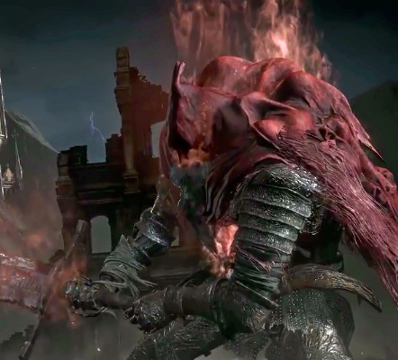

Gael o Cavaleiro Escravo |
||
|---|---|---|
|
 |
Gael é um NPC e Boss encontrado nas DLCs de Dark Souls 3, essa
página fala sobre a sua funcionalidade como inimigo.
Gael é o boss final da ultima DLC de Dark Souls 3, The Ringed
City, e é considerado o boss final da franquia, por ser a última
coisa adicionada na série souls. O Cavaleiro Escravo é uma
corrupção da sua forma normal, que foi criada ao consumir muitas
almas negras, todas que residem dentro dele agora.
Nada se sabe sobre quem Gael trabalhava, ou de onde ele era,
tudo que se sabe é que em
algum momento na sua vida o mesmo encontrou o mundo pintado de
Ariendel e a Pintora encontrada dentro do mundo,
Pintora na qual ele prometeu encontrar um pigmento especial para
a sua nova pintura.
Gael encontra 3 fases diferentes em sua luta, com a sua primeira
lutando mais como uma besta do que um humano,
correndo de 4 e se jogando para cima do inimigo como forma de
ataque, mas após se endireita e luta de forma mais humana.
Gael é encontrado pela primeira vez como um NPC não hostíl dentro
da capela da purificação, e te leva para dentro do mundo pintado
de Ariendel.
Gael, o Calaveiro Escravo, é encontrado fora do Descanso de
Filianore, perto dos tronos dos Senhores Pigmeus, no seu
primeiro encontro ele não irá atacar o jogador até que o mesmo
chegue perto o suficiente para fazer com que sua cinematica
comece.
Gael é fraco a dano contundente, a dano gélido,
dano tóxico e de veneno e na segunda e terceira fase leva
mais dano a "Espada Larga do Matador de Vazios".
Gael pode cambalear após levar dano o suficiente para a sua
postura, o abrindo para mais ataques.
Na sua seugnda e terceira fase, trovões caem sobre a arena,
antes de cairem, ele emitiram um brilho no chão, evite ficar
nesse brilho para desviar destes ataques.
{kind=link}